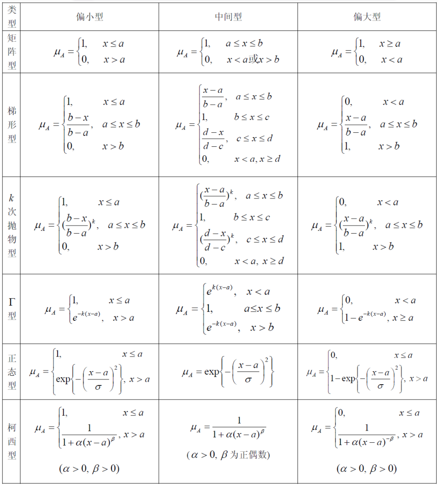
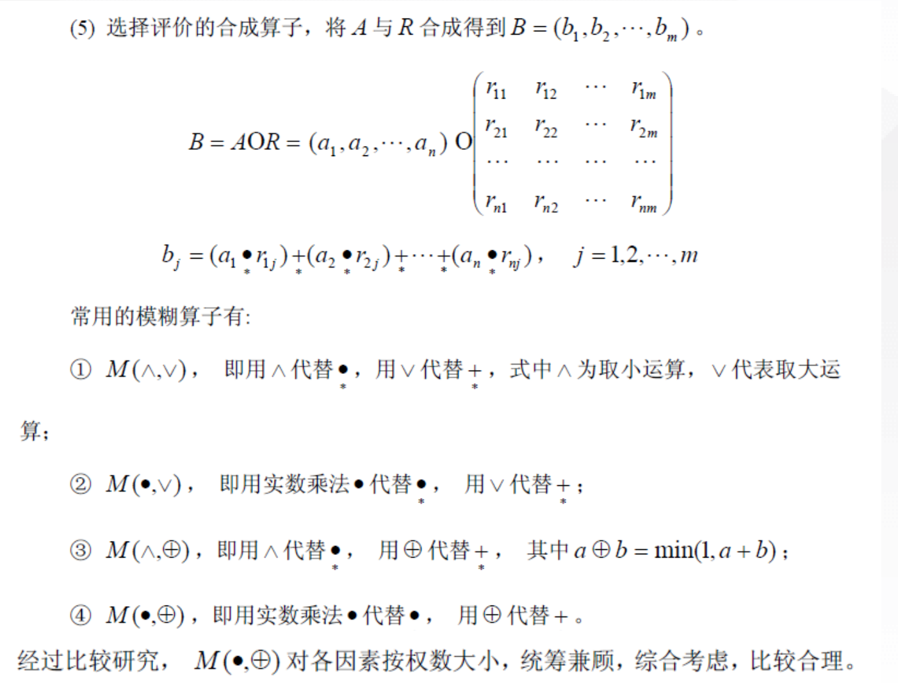
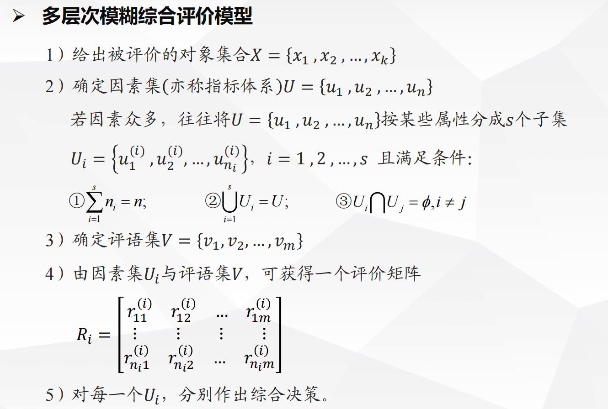
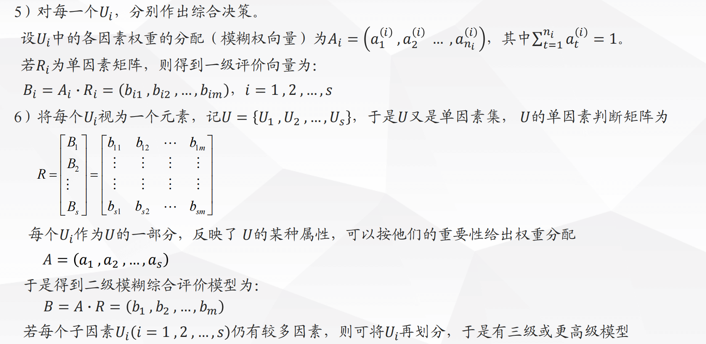

FCE
模糊综合评价法
模型原理
模糊数学
- 确定性概念与模糊性概念
- 确定性数学模型,随机性数学模型,模糊性模型
经典集合的基本概念
- 集合: 具有相同属性的事物的集体
- 集合的基本属性
- 互斥性
- 确定性:非此即彼
- 特征函数:
模糊集合和隶属函数
- 模糊集合:用来描述模糊性概念的集合
- 与经典集合相比,模糊集合承认亦此亦比
- 刻画:
- 隶属函数
- $\mu _A$ 隶属函数 $\mu _A(x)$ 隶属度
- 记为
- 显然隶属度为0.5时最具模糊性
隶属函数不是唯一的
模糊集合的表示方法
当论域 $X$ 为有限集时, 记 则 $X$ 上的模糊集合 $A$ 有三种表示形式
zadeh表示法
这里的 $\sum +$不是求和的意思,只是概括集合的记号 $\frac{\mu _A\left( x_i \right)}{x_i}$ 也不是分数,表示点$x_i$对模糊集合$A$的隶属度是 $\mu_A(x)$
序偶表示法
- 向量表示法
- 当论域 $X$ 为无限集时
$\int$ 不是积分 $\frac{\mu _A\left( x \right)}{x}$ 也不是分数
模糊集合的分类
- 偏小型,中间型,偏大型(考虑到隶属函数的单调性)
隶属函数的确定方法
1. 模糊统计法
找多个人对同一个模糊概念进行描述,用隶属频率定义隶属度
2. 借助已有的客观尺度
注意隶属度实在[0,1]之间的,如果找的指标不在,可以进行归一化处理
3. 指派法

4. 其它方法
- 德尔菲法
- 二元对比排序法
- 综合加权法
评价问题概述
- 模糊评价问题是要把论域中的对象对应评语集中一个指定的评语或者将方案作为评语集并选择一个最优方案
- 在模糊综合评价中,引入三个集合
- 因素集(评价指标集)
- 评语集(评价的结果)
- 权重集(指标的权重)
典型例题
一级模糊综合评价模型
- 确定因素集
- 确定评语集
- 确定各因素权重
- 确定模糊综合判断矩阵
- 模糊综合评价,进行矩阵合成运算

多层次模糊综合评价模型


本博客所有文章除特别声明外，均采用 CC BY-NC-SA 4.0 许可协议。转载请注明来源 PlutoC！